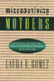

Browse
other Titles:
A B C
D E F
G H I
J K L
M N O
P Q R
S T U
V W X
Y Z |

|
The Machinery of Whiteness
Studies in the Structure of Racialization
Martinot, Steve
232 pp • 6x9 • Spring 2010
paper 978-1-43990-052-9
cloth 978-1-43990-051-2
|
|
Machos,
Maricones, and Gays
Cuba and Homosexuality
Lumsden,
Ian
304 pp • 5.5x8.25 • Fall 1995
paper 978-1-56639-371-3
cloth 978-1-56639-370-6
|
 |
The
Magic Hour
Film at Fin de Siècle
Hoberman,
J.
280 pp • 7x10 • Fall 2002
paper 978-1-56639-996-8
cloth 978-1-56639-995-1
|
 |
The Magic of Children's Gardens
Inspiring Through Creative Design
Tai,
Lolly, with a foreword by Jane L. Taylor
376 pp • 8x10 • Spring 2017
cloth 978-1-4399-1447-2
|
 |
Making a Global Immigrant Neighborhood
Brooklyn's Sunset Park
Hum, Tarry
296 pp • 6x9 • Spring 2014
paper 978-1-43991-091-7
cloth 978-1-43991-090-0 |
|
Making
Equity Planning Work
Leadership in the Public Sector
Krumholz,
Norman and John Forester, foreword by Alan A. Altshuler
271 pp • 6x9 • Spring 1990
paper 978-0-87722-701-4
cloth 978-0-87722-700-7 |
|
Making
Ethnic Choices
California's Punjabi Mexican Americans
Leonard,
Karen Isaksen
352 pp • 6x9 • Spring 1992
paper 978-1-56639-202-0
cloth 978-0-87722-890-5
|
 |
Making
History Matter
Dawidoff,
Robert
304 pp • 6x9 • Fall 1999
paper 978-1-56639-749-0
cloth 978-1-56639-748-3
|
 |
Making Modern Love
Sexual Narratives and Identities in Interwar Britain
Sigel, Lisa Z.
256 pp • 6x9 • Fall 2012
paper 978-1-4399-0805-1
cloth 978-1-4399-0804-4
|
 |
The
Making of Asian America through Political Participation
Lien,
Pei-te
312 pp • 6x9 • Fall 2001
paper 978-1-56639-895-4
cloth 978-1-56639-894-7
|
|
Making
Time
Ethnographies of High-Technology Organizations
edited
by Dubinskas, Frank A.
238 pp • Spring 1988
cloth 978-0-87722-535-5 |
 |
The
Male Nude in Contemporary Photography
Davis,
Melody D.
208 pp • 7x10 • Fall 1991
paper 978-1-56639-198-6
cloth 978-0-87722-839-4 |

|
The Man-Not
Race, Class, Genre, and the Dilemmas of Black Manhood
Curry, Tommy J.
294 pp • 6x9 • Spring 2017
paper 978-1-4399-1486-1
cloth 978-1-4399-1485-4
|
 |
The
Man in the Dugout
Baseball's Top Managers and How They Got That Way
Koppett,
Leonard
424 pp • 7x10 • Fall 1999
cloth 978-1-56639-745-2
|

|
Mandates, Parties, and Voters
Fowler, James H. and Oleg Smirnov
216 pp • 6x9 • Spring 2007
paper 978-1-59213-595-0
cloth 978-1-59213-594-3
|
 |
Managing
Contracted Services in the Nonprofit Agency
Administrative, Ethical, and Political Issues
Bernstein,
Susan R., foreword by Roger A. Lohmann
230 pp • 6x9 • Spring 1991
paper 978-0-87722-809-7
cloth 978-0-87722-808-0
|
 |
Managing
Sickle Cell Disease in Low-Income Families
Hill,
Shirley A.
240 pp • 5.5x8.25 • Spring 2003
paper 978-1-59213-195-2
|

|
Managing the Infosphere
Governance, Technology, and Cultural Practice in Motion
McDowell, Stephen D., Philip E. Steinberg and Tami K. Tomasello
248 pp • 5.5x8.25 • Fall 2007
paper 978-1-59213-280-5
cloth 978-1-59213-279-9
|
|
The
Manhattan Project
A Documentary Introduction to the Atomic Age
edited
by Stoff, Michael B.
320 pp • Fall 1990
paper 978-0-87722-787-8
cloth 978-0-87722-878-3 |
 |
Manufacturing
Suburbs
Building Work and Home on the Metropolitan Fringe
edited
by Lewis, Robert
304 pp • 6x9 • Fall 2004
paper 978-1-59213-086-3
cloth 978-1-59213-085-6
|
 |
Mapping
Gay L.A.
The Intersection of Place and Politics
Kenney,
Moira Rachel
240 pp • 5.5x8.25 • Spring 2001
paper 978-1-56639-884-8
cloth 978-1-56639-883-1
|
 |
Marriage
in a Culture of Divorce
Hackstaff,
Karla B.
292 pp • 6x9 • Fall 1999
paper 978-1-56639-725-4
cloth 978-1-56639-724-7
|
 |
Marsh,
Meadow, Mountain
Natural Places of the Delaware Valley
edited
by Harding, John J., illustrated by Carol Decker
320 pp • Fall 1985
paper 978-0-87722-401-3
cloth 978-0-87722-391-7 |
 |
Marx
on Religion
edited
by Raines, John
256 pp • 6x9 • Spring 2002
paper 978-1-56639-940-1
cloth 978-1-56639-939-5
|
|
Marx,
Reason, and the Art of Freedom
Brien,
Kevin M.
288 pp • Spring 1987
cloth 978-0-87722-466-2 |
 |
Marxism
in Latin America
edited
by Aguilar, Luis E.
412 pp • 4x7 • Spring 1978
paper 978-0-87722-108-1
cloth 978-0-87722-106-7
|
|
Mary
Heaton Vorse
The Life of an American Insurgent
Garrison,
Dee
400 pp • Spring 1989
paper 978-0-87722-781-6
cloth 978-0-87722-601-7 |

|
Masters
of the Sabar
Wolof Griot Percussionaists of Senegal
Tang, Patricia
Includes CD
224 pp • 6x9 • Fall 2006
paper 978-1-59213-420-5
cloth 978-1-59213-419-9
|

|
Material Law
A Jurisprudence of What's Real
Brigham, John
240 pp • 6x9 • Spring 2009
cloth 978-1-59213-964-4
|
|
Mavericks, Money, and Men
The AFL, Black Players, and the Evolution of Modern Football
Ross, Charles K.
212 pp • 6x9 • Spring 2016
paper 978-1-4399-1307-9
cloth 978-1-4399-1306-2
|
 |
Maya
Achi Marimba Music in Guatemala
Navarrete
Pellicer, Sergio
288 pp • 6x9 • Spring 2005
paper 978-1-59213-292-8
cloth 978-1-59213-291-1
|
 |
The
Maya Diaspora
Guatemalan Roots, New American Lives
edited
by Loucky, James and Marilyn M. Moors
248 pp • 6x9 • Fall 2000
paper 978-1-56639-795-7
cloth 978-1-56639-794-0
|
 |
Maya
In Exile
Guatemalans in Florida
Burns,
Allan F., introduction by Jerónimo Camposeco
256 pp • 5.5x8.25 • Spring 1993
paper 978-1-56639-036-1
cloth 978-1-56639-035-4 |
 |
Mayan
Drifter
Chicano Poet in the Lowlands of America
Herrera,
Juan Felipe
330 pp • 6x9 • Fall 1996
paper 978-1-56639-482-6
cloth 978-1-56639-481-9
|
 |
Mayors
and Schools
Minority Voices and Democratic Tensions in Urban Education
Chambers,
Stefanie 240 pp • 5.5x8.25 •
Spring 2006
paper 978-1-59213-469-4
cloth 978-1-59213-468-7
|
 |
Meaning
of a Disability
The Lived Experience of Paralysis
Robillard,
Albert B.
208 pp • 5.5x8.25 • Spring 1999
paper 978-1-56639-676-9
cloth 978-1-56639-675-2
|
|
Measuring
the Efficiency of Public Programs
Costs and Benefits in Vocational Rehabilitation
edited
by Berkowitz, Monroe
256 pp • Spring 1988
cloth 978-0-87722-527-0 |
 |
Medicaid
and the Limits of State Health Reform
Sparer,
Michael S.
248 pp • 5.5x8.25 • Spring 1996
paper 978-1-56639-434-5
cloth 978-1-56639-433-8
|
 |
Medical
Malpractice
Law, Tactics, and Ethics
McClellan,
Frank M.
328 pp • 6x9 • Fall 1993
paper 978-1-56639-066-8
cloth 978-1-56639-065-1 |
 |
Medicalized
Masculinities
edited
by Rosenfeld, Dana and Christopher A. Faircloth 272
pp • 6x9 • Fall 2005
paper 978-1-59213-098-6
cloth 978-1-59213-097-9
|
|
The
Memory Bird
Survivors of Sexual Abuse
edited
by Malone, Caroline, Linda Farthing and Lorraine Marce
295 pp • 5.5x8.25 • Spring 1997
paper 978-1-56639-526-7
cloth 978-1-56639-525-0
|

|
Men Can
The Changing Image and Reality of Fatherhood in America
Unger, Donald N. S.
240 pp • 5.5x8.25 • Spring 2010
cloth 978-1-4399-0000-0
|

|
Men's College Athletics and the Politics of Racial Equality
Five Pioneer Stories of Black Manliness, White Citizenship, and American Democracy
Kaliss, Gregory J.
248 pp • 6x9 • Spring 2012
paper 978-1-4399-0857-0
cloth 978-1-4399-0856-3 |
 |
Men
Who Sell Sex
International Perspectives on Male Prostitution and AIDS
edited
by Aggleton, Peter
296 pp • 6x9 • Fall 1998
paper 978-1-56639-669-1
cloth 978-1-56639-668-4
|
 |
Merengue
Dominican Music and Dominican Identity
Austerlitz,
Paul, foreword by Robert Farris Thompson
224 pp • 6x9 • Fall 1996
paper 978-1-56639-484-0
cloth 978-1-56639-483-3
|

|
Merger Games
The Medical College of Pennsylvania, Hahnemann University, and the Rise and Fall of the Allegheny Health Care System
Swazey, Judith P.
324 pp • 6x9 • Fall 2011
cloth 978-1-4399-0717-7
|
 |
Messages from Home
The Parent-Child Home Program for Overcoming Educational Disadvantage
Levenstein, Phyllis and Susan Levenstein
Revised and Updated Edition
288 pp • 6x9 • Spring 2008
paper 978-1-59213-677-3
cloth 978-1-59123-676-6
|
 |
Messiahs of 1933
How American Yiddish Theatre Survived Adversity through Satire
Schechter, Joel
304 pp • 6x9 • Spring 2008
cloth 978-1-59213-872-2
|
 |
The
Metaphysics of Self and World
Toward a Humanistic Philosophy
Adams,
E. M.
325 pp • 6x9 • Spring 1991
cloth 978-0-87722-784-7 |
 |
Mexican
American Women Activists
Identity and Resistance in Two Los Angeles Communities
Pardo,
Mary
322 pp • 5.5x8.25 • Fall 1997
paper 978-1-56639-573-1
cloth 978-1-56639-572-4
|
 |
Mexican Voices of the Border Region
Velasco Ortiz, Laura and Oscar F. Contreras, with translations by Sandra del Castillo
238 pp • 6x9 • Spring 2011
paper 1-59213-909-4
cloth 978-1-59213-908-8
|
 |
Mickey
Mouse History and Other Essays on American Memory
Wallace,
Michael
336 pp • 6x9 • Spring 1996
paper 978-1-56639-445-1
cloth 978-1-56639-444-4
|
 |
Middle
Class Radicalism in Santa Monica
Kann,
Mark E.
336 pp • Spring 1986
paper 978-0-87722-526-3
cloth 978-0-87722-414-3 |
|
Midwifery
and Childbirth in America
Rooks,
Judith Pence, foreword by Charles S. Mahan, M.D.
576 pp • 7x10 • Spring 1999
paper 978-1-56639-711-7
cloth 978-1-56639-565-6
|
 |
The
Migrant's Table
Meals and Memories in Bengali-American Households
Ray,
Krishnendu
256 pp • 6x9 • Fall 2004
paper 978-1-59213-096-2
cloth 978-1-59213-095-5
|
 |
Migration,
Transnationalization, and Race in a Changing New York
edited
by Cordero-Guzmán, Héctor R., Robert C. Smith and Ramón Grosfoguel
320 pp • 7x10 • Fall 2001
paper 978-1-56639-888-6
cloth 978-1-56639-887-9
|
 |
Militant
Labor in the Philippines
West,
Lois A.
256 pp • 6x9 • Fall 1996
cloth 978-1-56639-491-8 |
 |
Mind's
Eye, Mind's Truth
FSA Photography Reconsidered
Curtis,
James
160 pp • 9x10 • Fall 1989
paper 978-0-87722-823-3
cloth 978-0-87722-627-7 |
|
The
Mirror Dance
Identity in a Women's Community
Krieger,
Susan
224 pp • Spring 1983
paper 978-0-87722-314-6
cloth 978-0-87722-304-7 |
|  |
Misconceiving
Mothers
Legislators, Prosecutors, and the Politics of Prenatal Drug Exposure
Gomez,
Laura E.
256 pp • 5.5x8.25 • Fall 1997
paper 978-1-56639-558-8
cloth 978-1-56639-557-1 |
|
Missed
Connections
Hard of Hearing in a Hearing World
Stenross,
Barbara
139 pp • 5.5x8.25 • Spring 1999
paper 978-1-56639-682-0
cloth 978-1-56639-681-3
|
 |
Missing
Pieces
A Chronicle of Living with a Disability
Zola,
Irving Kenneth, foreword by Nancy Mairs
258 pp • 5.8125x9 • Fall 2003
paper 978-1-59213-244-7
|
|
Mobilizing
an Asian American Community
Võ,
Linda Trinh
304 pp • 6x9 • Spring 2004
paper 978-1-59213-262-1
cloth 978-1-59213-261-4
|

|
Mobilizing Communities
Asset Building as a Community Development Strategy
Edited by Green, Gary Paul and Ann Goetting
200 pp • 5.5x8.25 • Spring 2010
paper 978-1-4399-0087-1
cloth 978-1-43990-086-4
|

|
Mobilizing Gay Singapore
Rights and Resistance in an Authoritarian State
Chua, Lynette J.
228 pp • 6x9 • Spring 2014
paper 978-1-4399-1032-0
cloth 978-1-43991-031-3 |

|
Mobilizing Science
Movements, Participation, and the Remaking of Knowledge
McCormick, Sabrina
204 pp • 5.5x8.25 • Spring 2009
cloth 978-1-43990-009-3
|
 |
Model City Blues
Urban Space and Organized Resistance in New Haven
Jackson, Mandi Isaacs
296 pp • 6x9 • Spring 2008
paper 978-1-59213-604-9
cloth 978-1-59213-603-2
|
 |
Modeling Citizenship
Jewish and Asian American Writing
Schlund-Vials, Cathy
248 pp • 6x9 • Spring 2011
paper 978-1-4399-0318-6
cloth 978-1-4399-0317-9
|
 |
Modern
American Queer History
edited
by Black, Allida M.
312 pp • 7x10 • Spring 2001
paper 978-1-56639-872-5
cloth 978-1-56639-871-8
|
 |
The Mogul
Eddie Gottlieb, Philadelphia Sports Legend and Pro Basketball Pioneer
Westcott, Rich, foreword by Paul Arizin
320 pp • 6x9 • Spring 2008
cloth 978-1-59213-655-1
|
|
Money
for Change
Social Movement Philanthropy at the Haymarket People's Fund
Ostrander,
Susan A.
256 pp • 5.5x8.25 • Fall 1995
paper 978-1-56639-364-5
cloth 978-1-56639-363-8 |
|
The
Money Pitch
Baseball Free Agency and Salary Arbitration
Abrams,
Roger I.
240 pp • 6x9 • Spring 2000
cloth 978-1-56639-774-2
|
 |
Monitoring
Sweatshops
Workers, Consumers, and the Global Apparel Industry
Esbenshade,
Jill
288 pp • 6x9 • Spring 2004
paper 978-1-59213-256-0
cloth 978-1-59213-255-3
|
 |
Monopoly's
Moment
The Organization and Regulation of Canadian Utilities, 1830-1930
Armstrong,
Christopher and H. V. Nelles
384 pp • Spring 1986
cloth 978-0-87722-404-4 |
|
Moral
Freedom
Olen,
Jeffrey
149 pp • Fall 1988
cloth 978-0-87722-578-2 |
 |
A
Moral Military
Revised and Expanded Edition
Axinn,
Sidney
256 pp • 6x9 • Fall 2008
paper 978-1-59213-958-3
cloth 978-1-59213-957-6
|
 |
The
Moral Philosophy of G. E. Moore
Sylvester,
Robert Peter, edited by Ray Perkins, Jr. and R. W. Sleeper,
foreword by Tom Regan
240 pp • Spring 1990
cloth 978-0-87722-645-1 |
 |
Moral Problems in Higher Education
edited by Cahn, Steven M.
264 pp • 6x9 • Spring 2011
paper 978-1-4399-0659-0
cloth 978-1-4399-0658-3
|
|
Moral
Responsibility and Persons
Schlossberger,
Eugene
244 pp • Fall 1991
cloth 978-0-87722-879-0 |
|
Morality
and Human Nature
A New Route to Ethical Theory
McShea,
Robert J.
240 pp • Fall 1990
cloth 978-0-87722-735-9 |
 |
Morality,
Philosophy, and Practice
Historical and Contemporary Readings and Studies
edited
by Edel, Abraham, Elizabeth Flower and Finbarr W. O'Connor
620 pp • Fall 1988
cloth 978-0-87722-591-1 |
 |
Morality,
Responsibility, and the University
Studies in Academic Ethics
edited
by Cahn, Steven M.
288 pp • Fall 1990
paper 978-0-87722-959-9
cloth 978-0-87722-646-8 |
|
Morals,
Reason, and Animals
Sapontzis,
S. F.
328 pp • Fall 1987
paper 978-0-87722-961-2
cloth 978-0-87722-493-8
|

|
More
Philadelphia Murals and the Stories They Tell
Golden, Jane, Robin Rice and Natalie Pompilio, photographs
by David Graham and Jack Ramsdale
160 pp • 9x11 • Fall 2006
cloth 978-1-59213-527-1
|
 |
More
Speech
Dialogue Rights and Modern Liberty
Chevigny,
Paul
228 pp • Fall 1987
cloth 978-0-87722-514-0 |
 |
More Than a Game
Life Lessons from Philadelphia's Sports Community
Shorr-Parks, Eliot, and Steve Parks
266 pp • 6x9 • Spring 2012
cloth 978-0-9840429-0-6 |
 |
More
Than Black?
Multiracial Identity and the New Racial Order
Daniel,
G. Reginald
280 pp • 7x10 • Fall 2001
paper 978-1-56639-909-8
cloth 978-1-56639-908-1
|
 |
Morte
d'Author
An Autopsy
Hix,
H. L.
224 pp • Fall 1990
cloth 978-0-87722-734-2 |
 |
Mothers, Daughters, and Political Socialization
Two Generations at an American Women's College
Jenkins, Krista
178 pp • 6x9 • Spring 2013
paper 978-1-4399-0928-7
cloth 978-1-4399-0927-0 |
 |
Movements in Times of Democratic Transition
edited by Klandermans, Bert and Cornelis van Stralen
382 pp • 6x9 • Fall 2014
paper 978-1-43991-181-5
cloth 978-1-43991-180-8 |
 |
Moving
Up and Out
Poverty, Education, and the Single Parent Family
Holyfield,
Lori, foreword by Hillary Rodham Clinton
184 pp • 5.5x8.25 • Fall 2001
paper 978-1-56639-915-9
cloth 978-1-56639-914-2
|
 |
Muchachas
No More
Household Workers in Latin America and the Caribbean
edited
by Chaney, Elsa M. and Mary Garcia Castro
520 pp • Fall 1988
paper 978-0-87722-835-6
cloth 978-0-87722-571-3 |
|
Muhammad Ali
The Making of an Icon
Ezra, Michael
248 pp • 6x9 • Fall 2008
paper 978-1-59213-622-9
cloth 978-1-59213-661-2
|
|
Mulan's Legend and Legacy in China and the United States
Dong, Lan
280 pp • 6x9 • Fall 2010
paper 978-1-59213-971-2
cloth 978-1-59213-970-5 |

|
Multicultural Girlhood
Racism, Sexuality, and the Conflicted Spaces of American Education
Thomas, Mary E.
216 pp • 6x9 • Fall 2011
paper 978-1-4399-0732-0
cloth 978-1-4399-0731-3
|

|
Multiethnic
Moments
The Politics of Urban Education Reform
Clarke, Susan E., Rodney E. Hero, Mara S. Sidney, Luis Fraga
and Bari Anhalt Erlichson, foreword by Clarence N. Stone
264 pp • 6x9 • Fall 2006
paper 978-1-59213-537-0
cloth 978-1-59213-536-3
|
 |
Multiple
Modernities
Cinemas and Popular Media in Transcultural East Asia
edited
by Lau, Jenny Kwok Wah
264 pp • 7x10 • Fall 2002
paper 978-1-56639-986-9
cloth 978-1-56639-985-2
|
 |
Music and Social Change in South Africa
Maskanda Past and Present
Olsen, Kathryn
222 pp • 6x9 • Fall 2014
cloth 978-1-43991-136-5 |
 |
The
Music of Our Lives
Higgins,
Kathleen Marie
288 pp • Fall 1990
cloth 978-0-87722-756-4 |

|
Music, Disability, and Society
Lubet, Alex
208 pp • 5.5x8.25 • Fall 2010
paper 978-1-4399-0026-0
cloth 978-1-4399-0025-3
|

|
Music, Style, and Aging
Growing Old Disgracefully?
Bennett, Andy
226 pp • 5.5x8.25 • Fall 2012
paper 978-1-4399-0808-2
cloth 978-1-4399-0807-5 |
 |
Music,
Talent, and Performance
A Conseratory Cultural System
Kingsbury,
Henry
228 pp • 5.5x8.25 • Fall 1987
paper 978-1-56639-891-6
cloth 978-0-87722-516-4
|

|
Música Norteña
Mexican Migrants Creating a Nation Between Nations
Ragland, Cathy
268 pp • 6x9 • Spring 2009
paper 978-1-59213-747-3
cloth 978-1-59213-746-6
|

|
Musicians from a Different Shore
Asians and Asian Americans in Classical Music
Yoshihara, Mari
288 pp • 6x9 • Fall 2007
paper 978-1-59123-333-8
cloth 978-1-59123-332-1
|
 |
The Muslim Question in Europe
Political Controversies and Public Philosophies
OBrien, Peter
318 pp • 6x9 • Spring 2016
paper 978-1-4399-1277-5
cloth 978-1-4399-1276-8
|

|
The Mutual Housing Experiment
New Deal Communities for the Urban Middle Class
Szylvian, Kristin M.
New in Paperback!
294 pp • 6x9 •
Fall 2016
paper 978-1-4399-1206-5
cloth 978-1-4399-1205-8 |
|
My
Diary North and South
William Howard Russell
edited
by Berwanger, Eugene H.
384 pp • Fall 1987
cloth 978-0-87722-522-5 |
 |
My Culture, My Color, My Self
Heritage, Resilience, and Community in the Lives of Young Adults
Jenkins, Toby S.
204 pp • 6x9 • Spring 2013
paper 978-1-4399-0830-3
cloth 978-1-4399-0829-7 |
 |
My
Father's Testament
Memoir of a Jewish Teenager, 1938-1945
Gastfriend,
Edward, afterword by Björn Krondorfer
187 pp • 5.5x8.25 • Fall 1999
paper 978-1-56639-735-3
cloth 978-1-56639-734-6
|
 |
My
Life as a Colombian Revolutionary
Reflections of a Former Guerrillera
Vásquez
Perdomo, María Eugenia, translated by Lorena Terando, introduction
by Arthur Schmidt
312 pp • 6x9 • Fall 2004
paper 978-1-59213-101-3
cloth 978-1-59213-100-6
|
 |
My
Mother's Hip
Lessons from the World of Eldercare
Margolies,
Luisa, foreword by Walter M. Bortz II, M.D.
360 pp • 6x9 • Fall 2003
paper 978-1-59213-238-6
cloth 978-1-59213-237-9
|
 |
My Soul's Been Psychedelicized
Electric Factory: Four Decades in Posters and Photographs
Magid, Larry with Robert Huber
256 pp • 10x12 • Spring 2011
cloth 978-1-4399-0180-9 |
 |
Myth
and Modern Philosophy
Daniel,
Stephen H.
256 pp • Fall 1989
cloth 978-0-87722-644-4 |
 |
Myths
about the Powerless
Contesting Social Inequalities
edited
by Lykes, M. Brinton, Ali Banuazizi, Ramsay Liem and Michael
Morris, foreword by George W. Albee
416 pp • 6x9 • Spring 1996
paper 978-1-56639-422-2
cloth 978-1-56639-421-5
|